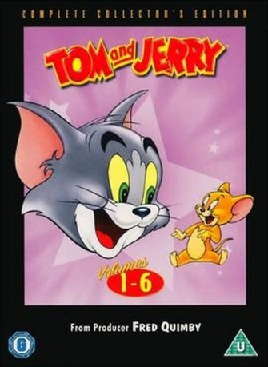

")
 
 IMDB-Wertung: 8.4 / 10
IMDB-Wertung: 8.4 / 10  Metascore:
Metascore: 
Find showtimes, watch trailers, browse photos, track your Watchlist and rate your favorite movies and TV shows on your phone or tablet!
Jahr: 2004
Dauer: 94 Minuten
FSK: 12
Land: USA Studio: Warner Home VideoTonspuren:
Untertitel:
Auflösung: SD (640x464) Größe: 698 MB
Regisseur:
Drehbuch: Hal Barwood
Soundtrack:
Darsteller:
 Tony Jay als
Tony Jay als  Richard Kind als
Richard Kind als Datei: X:\Kinder Collections\Tom und Jerry\Ultimate Classic Collection\Tom und Jerry 01 The Ultimate Classic Collection.avi seit 23.05.2017
Festplatte: Kinder-Filme+Trick
 Es gibt insgesamt 16 Filme in der Gruppe 'Kinder Collections\Tom und Jerry'
Es gibt insgesamt 16 Filme in der Gruppe 'Kinder Collections\Tom und Jerry'